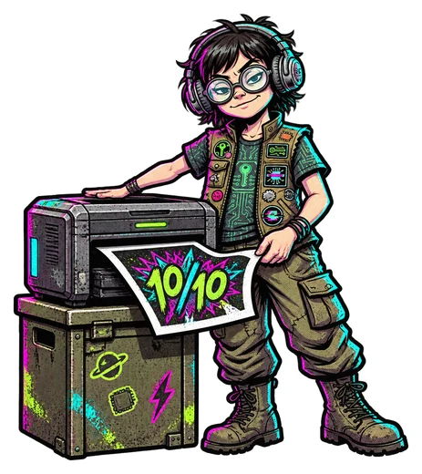
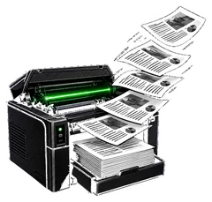
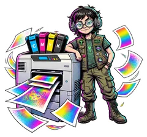
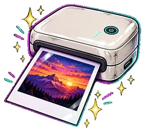

Comparatif imprimantes 2026 : le verdict par usage
50 imprimantes classées par usage : réservoirs d'encre, laser noir et blanc, laser couleur, photo et petits prix, avec les tests de la presse et des associations de consommateurs, un prix indicatif et les liens vers les marchands.

Ce qu'en dit la presse, et ce que ça coûte
Chaque bulle est une imprimante. Plus elle est à droite, mieux la presse l'a noté ; plus elle est basse, moins il est cher. Cliquez sur une bulle pour lire le verdict.

→ À droite : la presse l'a bien noté. ↑ En haut : il est cher. Grosse bulle : note appuyée sur beaucoup de tests. Pointillés : testé par la presse, mais sans note chiffrée. Les meilleures affaires sont en bas à droite, dans la zone jaune.
Choisissez votre usage
Réservoirs d'encre
Le choix de la bande : Epson EcoTank ET-2862 — 8,0/10 presse
Voir le top 10 →
Laser noir et blanc
Le choix de la bande : Brother DCP-L2620DW — testé, sans note
Voir le top 10 →
Laser couleur
Le choix de la bande : Brother MFC-L3760CDW — 8,0/10 presse
Voir le top 10 →
Imprimantes photo
Le choix de la bande : Canon Selphy CP1500 — 8,8/10 presse
Voir le top 10 →Petit prix (< 150 €)
Le choix de la bande : Canon PIXMA TS6550i — 7,0/10 presse
Voir le top 10 →Questions fréquentes
D'où viennent les tests des imprimantes ?
Les imprimantes sont surtout testées en laboratoire par les associations de consommateurs (Test-Achats, Que Choisir, Which?, Tænk) et par quelques médias (Les Numériques, TechRadar, RTINGS…). Les associations réservent leurs notes à leurs abonnés : nous citons et lions leurs tests sans note chiffrée, et la note presse n'est calculée que sur les notes publiques.
Comment est établi le classement ?
En tête : « le choix de la bande », notre recommandation pour l'usage. Ensuite, les imprimantes sont classées par note presse. Celles dont les tests ne donnent pas de note chiffrée viennent en dernier.
Réservoir d'encre ou cartouches ?
Au-delà de quelques pages par semaine, le réservoir est presque toujours gagnant : plus cher à l'achat, mais l'encre fournie suffit pour des milliers de pages. Pour imprimer très rarement, une imprimante à cartouches bon marché reste plus simple, à condition d'accepter des cartouches chères.
Laser ou jet d'encre ?
La laser imprime vite, le toner ne sèche jamais et le texte est très net : c'est le meilleur choix pour les documents. Le jet d'encre reste indispensable pour les photos et polyvalent à la maison.
D'où viennent les prix ?
Nous affichons un prix indicatif par imprimante : le prix constaté sur Amazon lors de notre dernier relevé, arrondi à la dizaine d'euros. Quand l'imprimante n'est proposée que par un vendeur tiers sur Amazon, nous l'indiquons. Seul le prix affiché par le marchand fait foi.